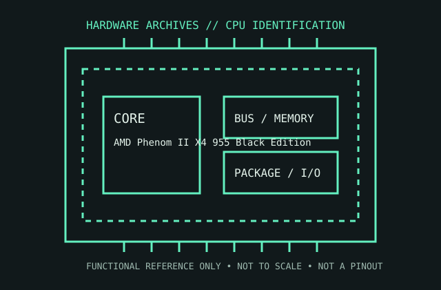

[ AMD GENERATIONS // IDENTIFIED COMPONENT ]
AMD Phenom II X4 955 Black Edition
A 3.2 GHz Deneb desktop quad-core, the Phenom II X4 955 Black Edition is a Socket AM3 product with an unlocked multiplier.

MODEL IDENTIFICATION: AMD Phenom II X4 955 Black Edition. Read the full top marking/OPN, speed grade, package, and stepping from the physical part; do not transfer specifications across similarly named revisions.
Recorded specifications
| Cataloged part | AMD Phenom II X4 955 Black Edition |
|---|---|
| Era / family | AMD Phenom II / Deneb, introduced 2009; model HDZ955FBK4DGM is the C3 125 W version. |
| Key specifications | 4 cores / 4 threads; 3.2 GHz nominal clock; 6 MB shared L3 plus 2 MB total L2; 125 W TDP for the cited C3 OPN; Socket AM3; dual-channel DDR3 support, with compatible AM2+ platforms using DDR2. |
| Interface / fit | Use a board whose CPU support list includes the exact OPN/stepping and BIOS. AM3 boards use DDR3; an AM2+ board may support this AM3 CPU with DDR2 only when its vendor documents support. |
| Variants / identification | Phenom II X4 955 parts exist with differing stepping/OPN and thermal limits. The unlocked Black Edition branding does not guarantee motherboard/VRM support for overclocking. |
Compatibility and service notes
- Use a board whose CPU support list includes the exact OPN/stepping and BIOS. AM3 boards use DDR3; an AM2+ board may support this AM3 CPU with DDR2 only when its vendor documents support.
- Phenom II X4 955 parts exist with differing stepping/OPN and thermal limits. The unlocked Black Edition branding does not guarantee motherboard/VRM support for overclocking.
- Verify the printed OPN rather than relying on “955” alone. Check AM2+/AM3 board BIOS, VRM capability, memory type, and cooler rating; preserve stock clocks and voltage in archival tests.
- Before installation, compare the exact CPU marking with the motherboard maker’s support list, board revision, BIOS minimum, package/socket, power requirements, and memory type. Do not force a package into a socket.
Service & archival record
Verify the printed OPN rather than relying on “955” alone. Check AM2+/AM3 board BIOS, VRM capability, memory type, and cooler rating; preserve stock clocks and voltage in archival tests.
For a collection record, photograph both sides, retain the full model/OPN and date/lot codes, describe package and contact condition, and record the tested motherboard revision, firmware, cooling, memory, and measured operating conditions. Separate measured observations from published limits.
Sources & further reading
- AMD Phenom II X4 955 product specifications — model/OPN dataModel-specific manufacturer, technical-document, or product-history reference; consult the exact device marking and board revision.
- AMD Phenom II processor data sheet and electrical design guideModel-specific manufacturer, technical-document, or product-history reference; consult the exact device marking and board revision.
- AMD Phenom II family/product-history referenceModel-specific manufacturer, technical-document, or product-history reference; consult the exact device marking and board revision.
Third-party mirrors or historical document indexes may host manufacturer-authored manuals. Check document revision and exact model marking; board compatibility remains specific to its maker and firmware.